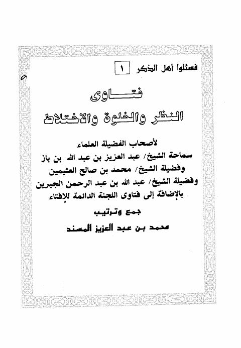
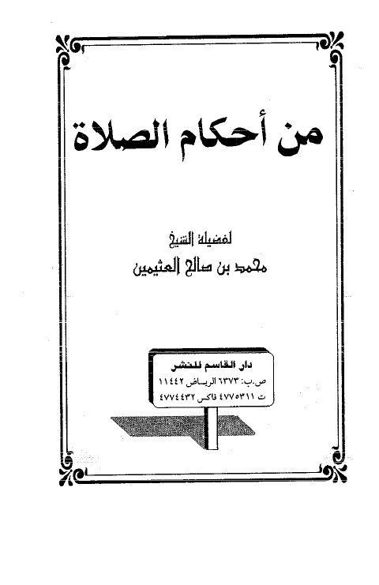
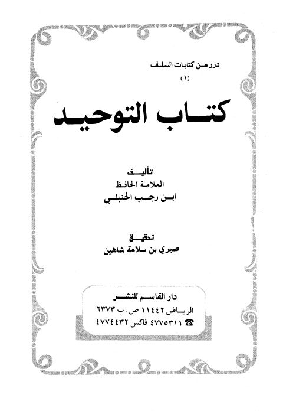
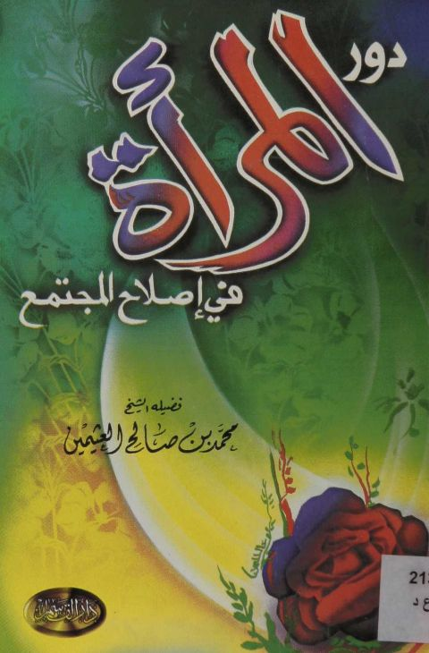
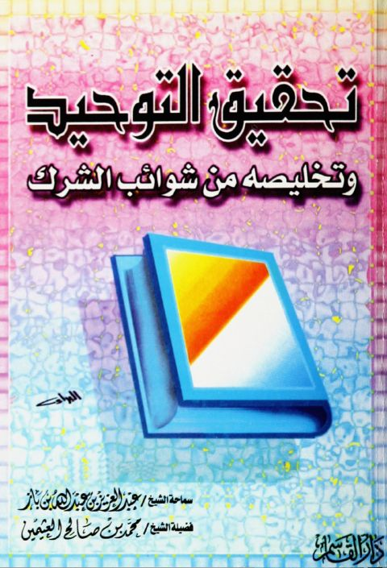

فتاوى النظر والخلوة والاختلاط فتاوى النظر والخلوة والاختلاط ابن باز • العثيمين • الجبرين • اللجنة الدائمة
من أحكام الصلاة من أحكام الصلاة محمد بن صالح العثيمين
كتاب التوحيد- ابن رجب كتاب التوحيد- ابن رجب عبد الرحمن بن أحمد بن رجب الحنبلي
دور المرأه في إصلاح المجتمع دور المرأه في إصلاح المجتمع محمد بن صالح العثيمين
تحقيق التوحيد وتخليصه من شوائب الشرك تحقيق التوحيد وتخليصه من شوائب الشرك عبد العزيز بن عبد الله بن باز • محمد بن صالح العثيمين